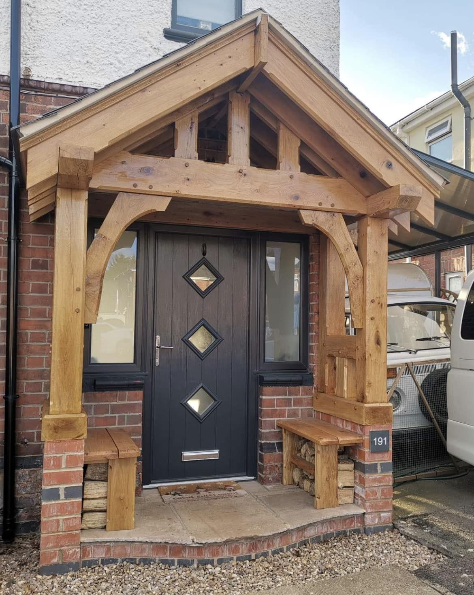

Acorn Oak Porches
About us
Bilborough, Nottingham
Our story
Hand-crafted, the traditional way
Acorn Oak Porches is a Nottingham business building traditional solid oak porches for homes across the area.
Every porch is individually hand-crafted from green oak, using traditional methods of construction and fitting: pegged joints, curved braces and proper tiled or slate roofs.
As well as porches, we build very heavy solid oak benches to any size, carry out all types of roof work and give free estimates on all aspects of property maintenance.
“Built this for a really nice customer last year and he’s just given it another coat of Osmo oil today. Looking really nice with the two oak benches.”From our Facebook page


Reviews
Happy with our work?
We’d love to hear from you. Leave us a review on Facebook or Google and it will help other local people find us.
Find us on FacebookGallery
Photos of our work
Tap any photo to see it bigger.


Nottingham & Nottinghamshire
Need a hand? Let’s talk.
Free quotes. Call or text 07867 515144 or email protrade90@gmail.com.